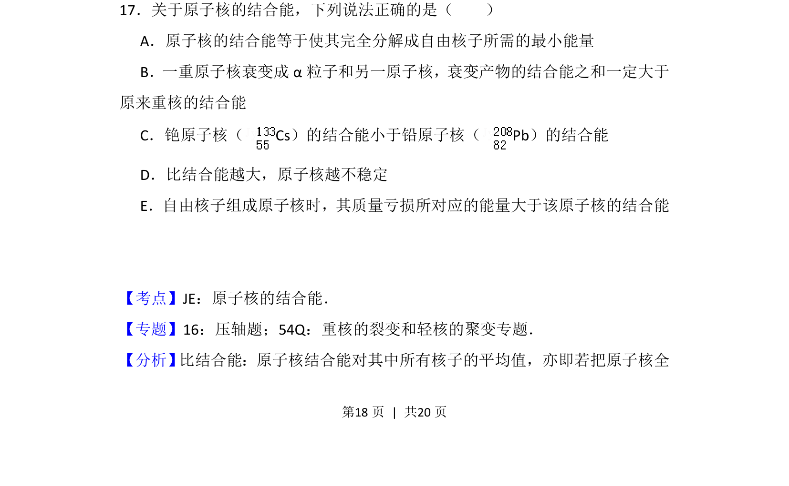
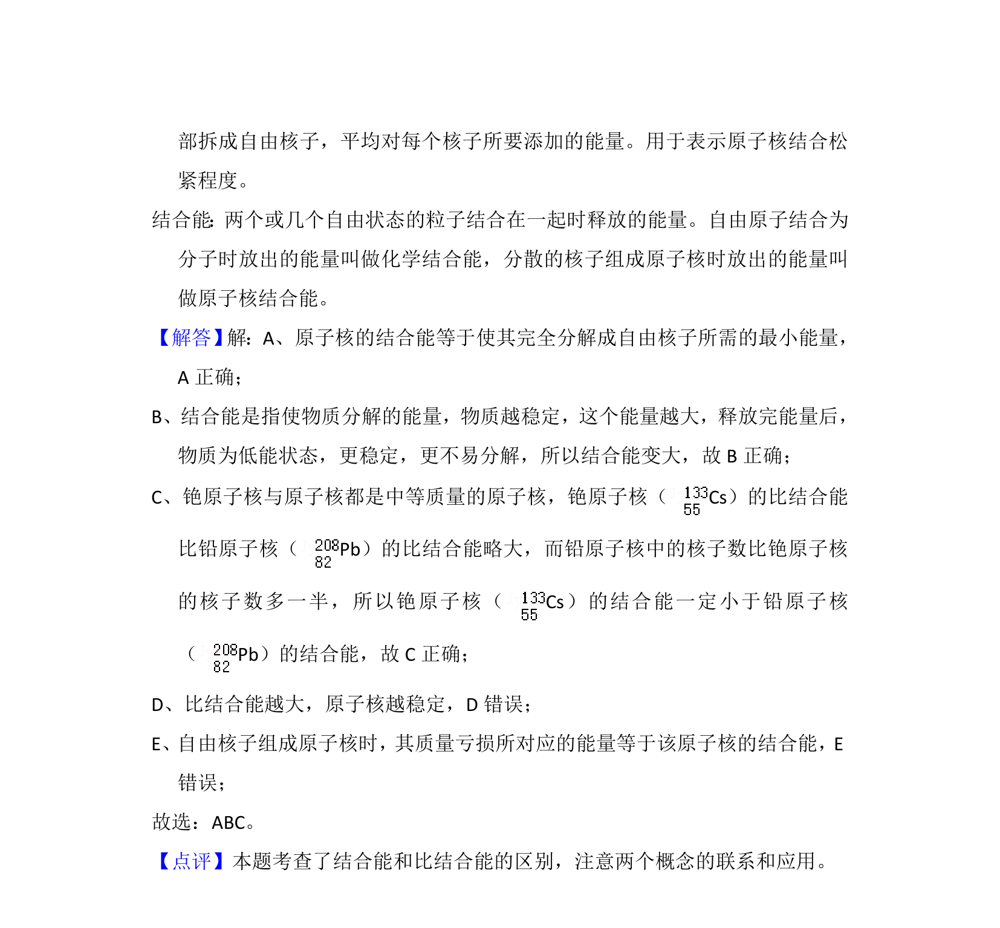

考点：结合能 比结合能 质量亏损

本题通过多项选择形式考查原子核结合能的概念、比结合能与稳定性的关系及质量亏损相关计算。

📄 原 PDF 第 18 页：
素材/真题/吉林/2008-2024·（吉林）物理高考真题/2013年高考物理试卷（新课标Ⅱ）（解析卷）.pdf
17．关于原子核的结合能，下列说法正确的是（ ） A．原子核的结合能等于使其完全分解成自由核子所需的最小能量 B．一重原子核衰变成α粒子和另一原子核，衰变产物的结合能之和一定大于 原来重核的结合能 C．铯原子核（Cs）的结合能小于铅原子核（Pb）的结合能 D．比结合能越大，原子核越不稳定 E．自由核子组成原子核时，其质量亏损所对应的能量大于该原子核的结合能
【考点】JE：原子核的结合能．菁优网版权所有 【专题】16：压轴题；54Q：重核的裂变和轻核的聚变专题． 【分析】 比结合能：原子核结合能对其中所有核子的平均值，亦即若把原子核全